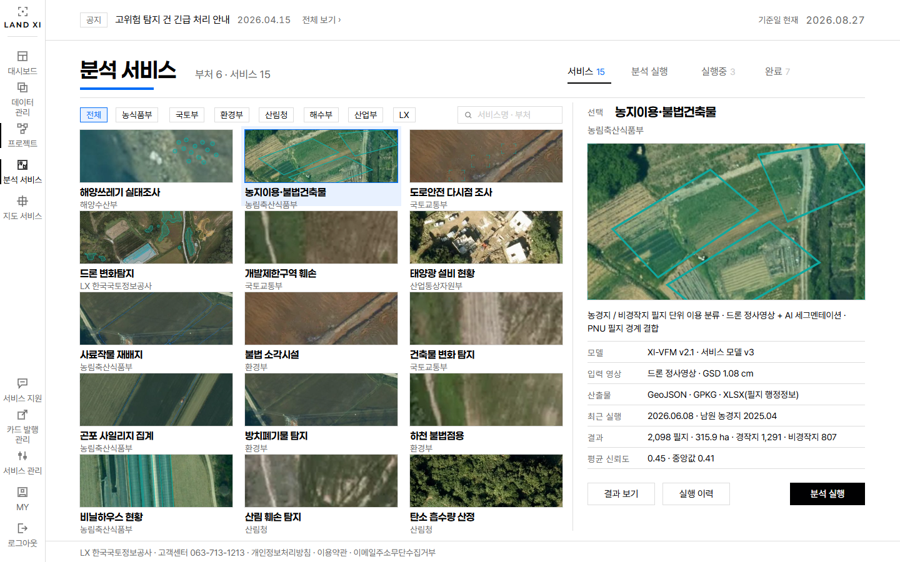
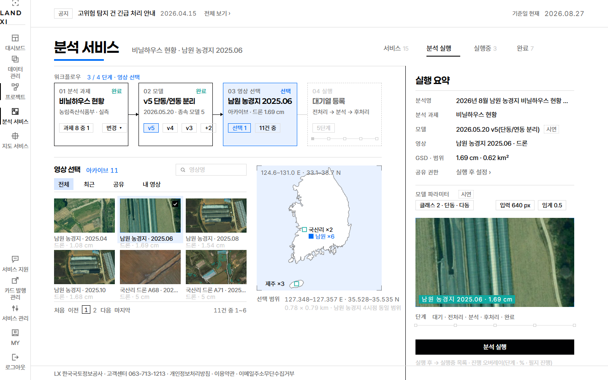
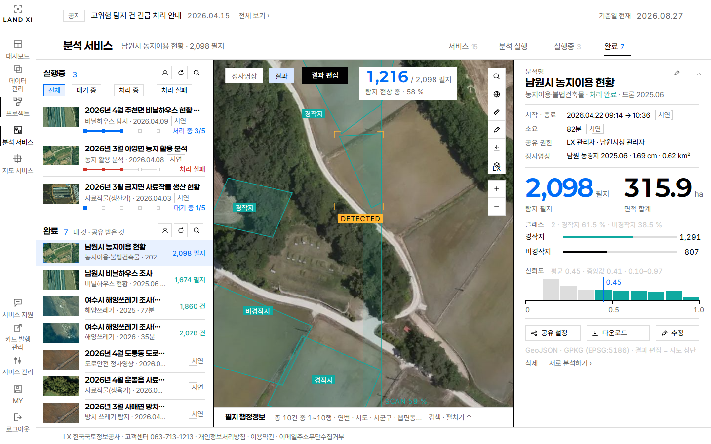

Land-XI · 원판 갤러리 · GitHub 버전 · 자동 생성 (node tools/review/masters.mjs)
디자인 원판 27장
카테고리별로 적용(사이트에 구현됨)과 검토(확장·구현 대기)를 보여주고, 폐기는 맨 아래 카테고리별로 둡니다. 카드의 버튼으로 상태를 바꾸면(승격 포함) 아래 요약에 모입니다 — 복사해 전달하시면 기준표에 반영합니다. 편집 캔버스: landxi-design-b2.html · 검토 허브
상태 변경
로그인 적용 1 · 검토 0

B5 · 로그인 — 좌 실제 로그인 폼 / 우 서비스 화면(B5 대시보드 · 데이터 관리 · XI맵 실렌더 6 s 교차)
대시보드 적용 1 · 검토 0

B5 · 대시보드 — 12.8 토글 [AI 학습데이터 구축 현황] 선택 상태
데이터 관리 적용 1 · 검토 0

B5 · 데이터 관리 — Roboflow Images 그리드 골격 × B2 아카이브/완료/발행중 처리 (발주 확정안)
프로젝트 적용 0 · 검토 9

B5 · 프로젝트 — 목록: 실크롭 카드 2열 372×224(79 %) + 이름/메타/상태어 + 만들기 드로어 480 · CTA 1

B5 · 프로젝트 — 개요: 이름 40 + 탭 6 + 히어로 776×436 + 큰 수 4 · 정보/구성원 = 드로어 480 · CTA 라벨링 이어하기

B5 · 프로젝트 — 데이터 탭: 타일 3열 248×140 + 데이터셋 띠 + 파일 추가 드로어(썸네일 8) · CTA 파일 추가

B5 · 프로젝트 — 학습 탭: 워크플로우 캔버스 노드 6(데이터셋 → 증강 없음 → 기반 모델 → 학습 → 검증 → 결과, 칩 = 원본 10필드) + 학습 곡선(에폭 눈금자 · 현재 에폭 테이프 58) + 이력 띠 5 + 결과 드로어(클래스별 F1 · 오분류 행렬) · CTA 학습 시작

B5 · 프로젝트 — 라벨링 편집(&did=): 지도 1368 실정사영상 + 라벨 폴리곤 5 · 툴바 8 · 좌 영상 3 · 우 드로어 = 클래스 편집기(견본 · 인라인 이름 · 단축키 · 수 · ↑↓ · × · 추가) + 라벨 목록 + 일괄 변경 · CTA 저장

B5 · 프로젝트 — 분석 탭: 지도 풀블리드 + 좌 드로어(세그먼트 3 · 픽커 3단 실썸네일 6) + 우 실행 목록 3(실행중 2 · 완료 1 → 결과 폴리곤) + 공유 설정 · CTA 분석 실행

B5 · 프로젝트 — 배포 탭: 세그먼트 2(발행 요청 1 · 모델 등록 0 빈 판) + 우 드로어 720 발행 폼 13필드 + 학습 결과 픽커 · 썸네일 실크롭 2 · CTA 발행 요청

B5 · 프로젝트 — 삭제 확인: 개요 .54 감쇠 + 대화상자(원본 confirm 문구 그대로) · 취소 / 삭제

B5 · 프로젝트 — 만들기: 5단계 워크플로우 레일(01 프로젝트명 ✓ · 02 서비스 유형 ✓ · 03 영상 불러오기 진행 · 04 학습데이터 · 05 구성원 초대) + 03 아카이브 타일 6 + 풋프린트 판 + 우 프로젝트 요약(실크롭) · 클래스 없음 · CTA 프로젝트 만들기
분석 서비스 적용 0 · 검토 3
{kind=link}

B5 · 분석 서비스 — 서비스: KPI 5(서비스 15 · 부처 6 · 실행중 3 · 완료 7 · 준비 중 10) + 실측 증거 카드 5(실크롭 + 청록 결과 + 큰 수) + 라인업 점선 판 10 · 부처 칩 8 · CTA 분석 실행
{kind=link}

B5 · 분석 서비스 — 분석 실행: 워크플로우 4노드(과제 → 모델 → 영상 선택[활성] → 실행) + 아카이브 픽커(탭 4 · 실썸네일 6 · 페이지 2) + 대한민국 벡터 풋프린트 + 우 실행 요약 424 · CTA 분석 실행
{kind=link}

B5 · 분석 서비스 — 결과: 풀블리드 정사영상 + 청록 결과 · 스캔 스트립 → 브래킷 → DETECTED(앰버) → 카운트업 1,216/2,098 · 좌 드로어 실행중 3/완료 7 · 우 결과 요약(큰 수 2 · 클래스 막대 · 신뢰도 테이프) · 공유/다운로드 헤어라인 · 토글 정사영상↔결과 · CTA 결과 편집
메인(필름) 적용 0 · 검토 1

B2 · 홈 — 필름 스테이지 (CHAPTER 01)
XI맵 적용 0 · 검토 1

B2 · 지도 서비스 (XI맵) — 분석 지도
폐기 카테고리별 · 승격 가능
로그인

B2 · 로그인 — 플랫폼 소개
대시보드

B2 · 대시보드 — A안 지도 위 원장

B3 · 대시보드 — 축소 현황 원장 (지도 없음 · 벤치마킹 안 C ESRI-LEDGER)

B4 · 대시보드 — 전면 개편 (124px 진술 · 스캔 스트립 · 검정 반전 판 · 신규 계측 글리프)

B5 · 대시보드 — 12.8 대한민국 한 판 · 토글 [AI 분석 결과] 선택 · 0.25° 그리드 · 등급 범례
데이터 관리

B2 · 데이터 관리 — 데이터 업로드 탭

B2 · 데이터 관리 — 아카이브 / 완료 / 발행중

B3 · 데이터 관리 — 4탭 = 파이프라인 4단계 · 영상 프레임 우선 원장 (전면 재설계)
프로젝트

B2 · 프로젝트 — 목록 + 워크플로우 캔버스
메인(필름)

B2 · 홈 — 아틀라스 (CHAPTER 02)